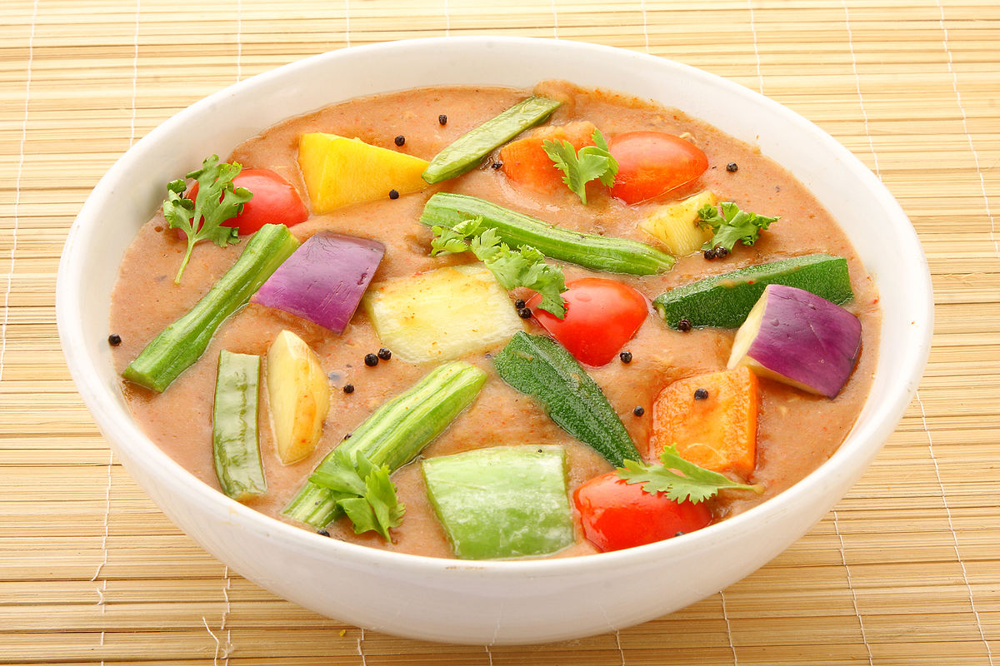

Sambar

Description
I share our favorite Sambar Recipe which I have perfected over the years
with video and step-by-step photos. Make this flavorsome, hearty and healthy
South Indian vegetable-lentil stew with this easy method. Enjoy the sambar
with South Indian snacks like idli, dosa, medu vada, uttapam or simply pair
it with rice for a comforting, nutritious and filling meal.
Ingriedents
For Pressure Cooking
- ½ cup toor dal
- ½ tsp turmeric powder
- 2 cups water
Vegetables
- 10 drumstick pieces
- ¼ onion (cubed)
- ½ to mato (roughly chopped)
- 7 pieces brinjal / eggplant
- ½ carrot (chopped)
- ½ potato (chopped)
Other Ingriedents
- ½ lemon sized tamarind
- 1 tsp jaggery or sugar
- 2 green chilli (slit)
- salt to taste
- ½ tsp turmeric powder
- 2 tsp sambar powder (home made udupi style sambar powder)
Tempering Ingriedents
- 1 tbsp coconut oil / any cooking oil
- 1 tsp mustard seeds
- ¾ tsp urad dal
- few curry leaves
- pinch of hing
Steps
- irstly, in a pressure cooker add ½ cup of toor dal with 2 cups of water.
also add pinch of turmeric. pressure cook it for 5 whistles.
- meanwhile, in a small bowl take small half lemon sized tamarind and soak
in water.
- also, prepare and chop veggies like
carrot, eggplant, drumstick, onions and tomatoes.
- now, in a large kadai take the tamarind water.
- to that add 1 tsp of jaggery/sugar along with green chill,
salt and turmeric powder.
- furthermore, add all the chopped vegetables to same mixture.
- meanwhile, once the dal is cooked mash it well
- after 10 minutes, the vegetables should be cooked properly.
- now add the mashed toor dal and bring it to boil.
- add 2 tsp of sambar powder.
- mix the sambar powder and bring it to boil.
- prepare the tempering by heating urad dal, mustard seeds,
hing, curry leaves and red chillies.
- add the tempering to the freshly prepared sambar.
- finally, sambar is ready
Back